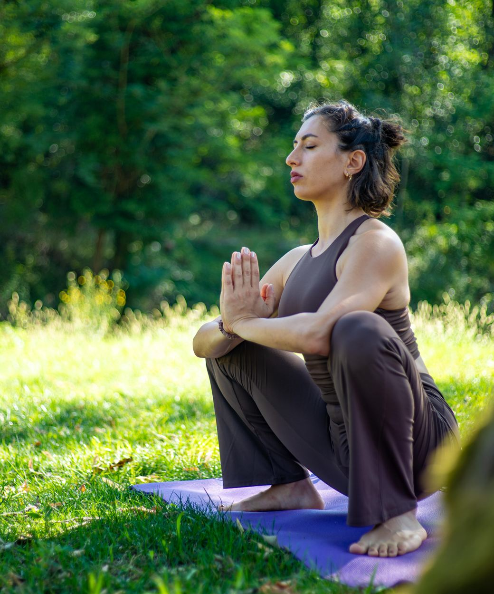
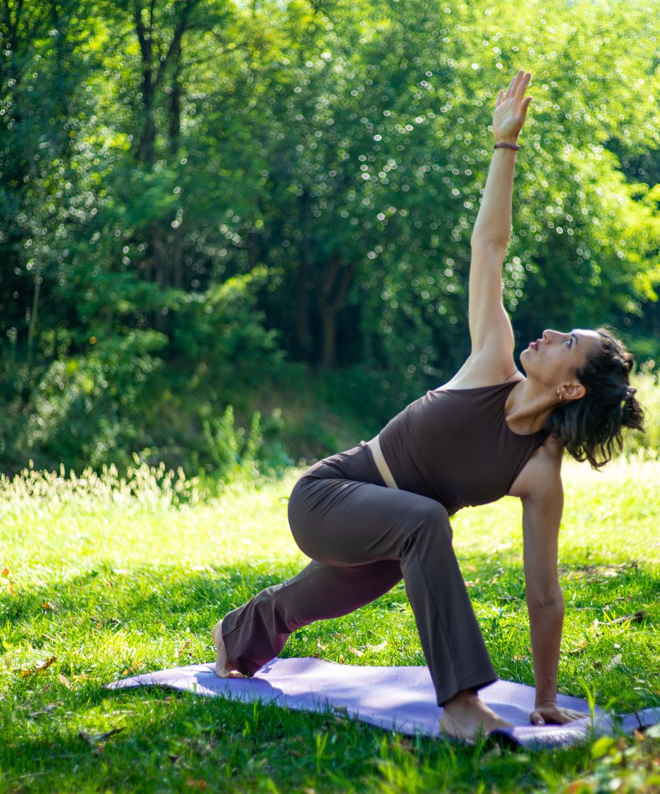
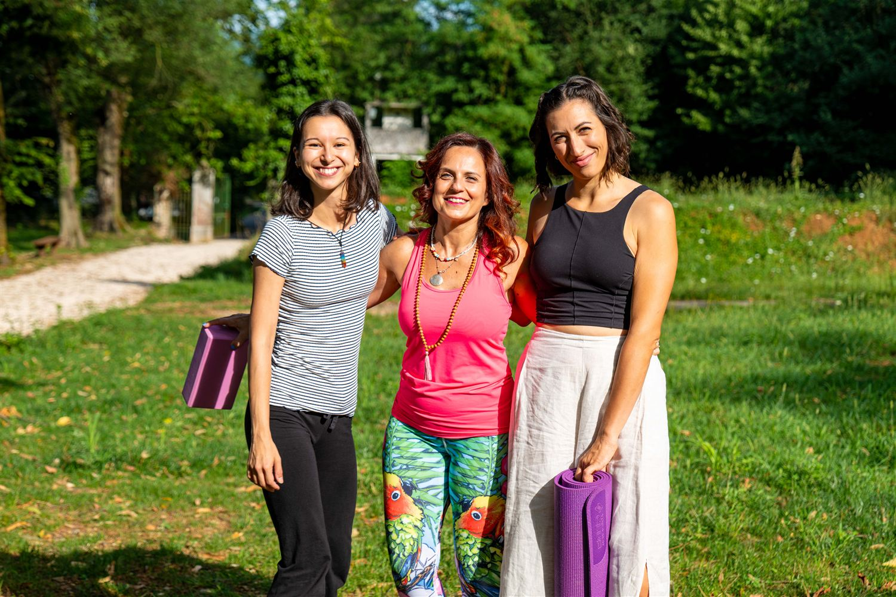

Movimento nel Bosco è una scuola di Yoga e Pilates a Mompiano, ai piedi del Colle San Giuseppe. Ma prima ancora di essere una scuola è un'idea: che il corpo sia uno strumento di consapevolezza.
Respiro, movimento, ascolto: il lavoro sul corpo costruisce consapevolezza. E quella consapevolezza non resta sul tappetino — diventa un modo di portare attenzione e presenza nella vita di tutti i giorni.
Il corpo arriva dove la mente da sola non arriva. Senza il filtro del pensiero è più vicino a chi siamo davvero. Da lì, un passo alla volta, nasce il cambiamento.

Non due strade alternative: due parti della stessa esperienza, che si sommano.
Yoga e Pilates, ogni settimana, tutto l'anno. È il lavoro costante: la consapevolezza si costruisce con la ripetizione, un'abitudine più che un evento.
A cicli e stagioni, altre vie sensoriali verso la stessa presenza: il suono dei bagni sonori, gli oli essenziali e i fiori di Bach, il bosco stesso con lo yoga all'aperto.
Il corpo dei corsi e i sensi degli eventi lavorano insieme, nella stessa direzione.
Il nostro nome non è un'etichetta: racconta già quello in cui crediamo.
Il bosco c'è davvero: siamo nel verde di Mompiano, ai piedi del Colle San Giuseppe. Ma è anche un simbolo — il posto dove la mente rallenta e si torna a respirare.
È il cambiamento continuo del corpo e della mente, un passo alla volta. Ed è una comunità: persone diverse che si muovono nella stessa direzione.
Qui non si insegue la performance. Si va un passo alla volta, nel rispetto dei ritmi di ognuno: ci sono giorni per spingere e giorni per lasciar andare.
Non promettiamo risultati né soluzioni: offriamo un percorso, costruito sui tempi di chi lo vive. Yoga e Pilates sono strade diverse verso la stessa cosa — equilibrio e presenza, senza fretta e senza giudizio.


Dietro ogni pratica ci sono insegnanti con anni di esperienza e attenzione per chi hanno davanti. Nella loro voce e nelle loro mani il metodo si adatta a chi c'è in sala, mai il contrario.
Movimento nel Bosco nasce dentro l'Emporio nel Bosco, ed è da lì che porta in sala aromaterapia, fiori di Bach e cura dei dettagli.
Prenota una lezione di prova: è il modo più semplice per capire come lavoriamo.
Via Fontane 32, Mompiano (Brescia) — dentro l’Emporio nel Bosco